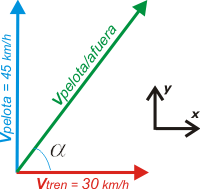

NO ME SALEN
EJERCICIOS RESUELTOS DE FÍSICA DEL CBC
(movimiento relativo)
|
|

|
NMS c7.21* - Un tren de carga se mueve con velocidad constante de módulo 30 km/h sobre una trayectoria horizontal recta. Un hombre en uno de los vagones lanza una pelota al aire con velocidad inicial respecto al tren de módulo 45 km/h, y verticalmente hacia arriba. Entonces, el módulo y la dirección de la velocidad inicial de la pelota (respecto a la dirección de movimiento del tren) vista por un hombre de pie en la vía son aproximadamente:
a) v=54 km/h, α=56° b) v=54 km/h, α=34° c) v=75 km/h, α=90°
d) v=45 km/h, v=53° e) v=30 km/h, α=45° f) v=15 km/h, α=60°
|
*El presente ejercicio formó parte del examen final de Física (03) del CBC, UBA, tomado el 07-12-18. Para ver el examen completo haga click ACÁ. |
|
|
|
Este ejercicio es tan sencillo que se resuelve sin casi acordarse de los dolores de cabeza que provocan los de movimiento relativo.
La clave es reconocer que la velocidad inicial de la pelota tiene una componente horizontal que el la velocidad del tren. |
|
Hagamos un esquema de la composición de velocidades.
En rojo la velocidad del tres (podemos llamarla también velocidad de arrastre.
En verdela velocidad de la pelota dentro del sistema móvil, el tren, que como dice el enunciado es vertical respecto al tren.
En celeste a velocidad que tenemos que hallar, la velocidad de la pelota vista desde la vía. |
 |
|
|
Como verás, ser trata, en el fondo, de un ejercicio de movimiento relativo que se resuelve como todos los demás:
VpV = VpT + VTV (suma vectorial), (p=pelota, T=tren, V=vía)
Como las velocidades que intervienen en la suma son ortogonales, podemos utilizar el Teorema de Pitágoras.
VpV² = VpT² + VTV² (módulos)
VpV² = (45 km/h)² + (30 km/h)²
VpV = 54,1 km/h
Para conocer el ángulo que forma la pelota con la horizontal (vista por el chabón en la vía) basta con aplicar la función arc tg.
α = arc tg (VpT / VTV)
α = arc tg 1,5
α = 56,31˚
Elijamos la opción correcta... |
|
| |
|
| |
va/v = 54 km/h ; α = 56˚ |
opción a) |
|
|
|
|
| Desafío: ¿Qué cambia si justo en el instante en que es arrojada la pelota el tren comienza a frenar con una aceleración de 5 m/s²? |
 |
| |
| |
|
| Algunos derechos reservados.
Se permite su reproducción citando la fuente. Última actualización dic-18. Buenos Aires, Argentina. |
|
|
|